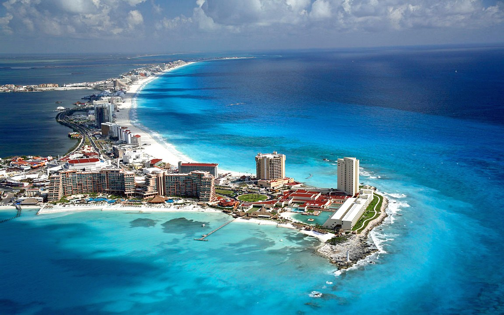
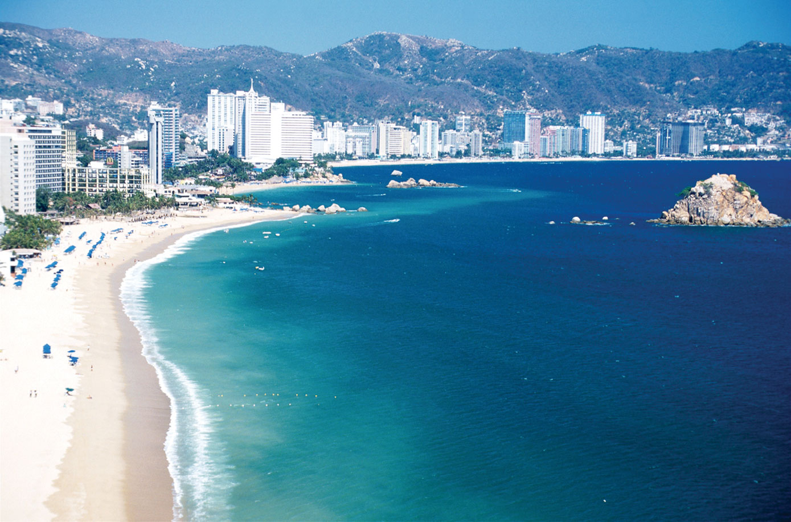
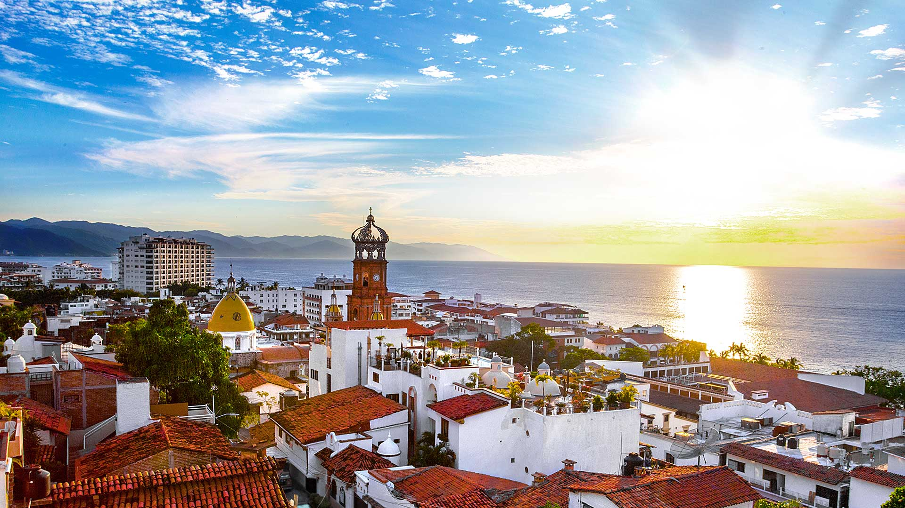
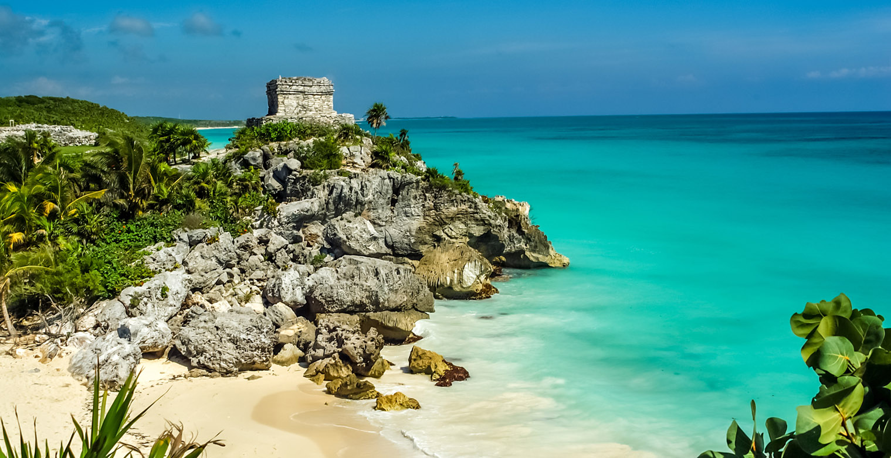
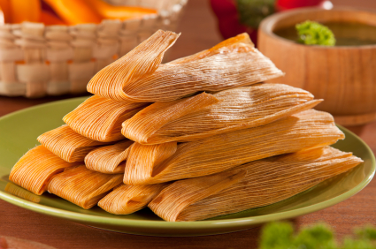

Lugares que puedes visitar!
1. Ciudad de Mexico

Capital de México, una metrópoli famosa por su vibrante vida urbana, congregando museos de relevancia mundial, emblemáticos sitios históricos, masivos festivales, glamorosas avenidas, tiendas, restaurantes, y por supuesto, una de las noches más animadas de Latinoamérica.Entre sus atractivos principales, destaca un fascinante centro histórico declarado Patrimonio de la Humanidad por la Unesco, con impresionantes sitios de la cultura Azteca, que dan cuenta de una historia de desarrollo humano de más de 3.000 años y joyas coloniales de los siglos XVI al XIX. En sus entornos, no se puede dejar de mencionar la vecina Teotihuacán con sus gigantes pirámides del sol y la luna.
2. Los cabos

Considerado uno de los lugares turísticos de México de mayor belleza, deslumbrando con sus kilómetros de playas bañadas por el Mar de Cortés, famosas por sus arenas doradas y aguas turquesas, inmersas entre paisajes de montaña y desierto. Esta zona, también hace parte del conjunto de islas y áreas protegidas del Golfo de California, declaradas por su riqueza natural, Patrimonio de la Humanidad por la Unesco.El pintoresco pueblo de San José del Cabo, la vida nocturna del Cabo San Lucas y las grandes cadenas hoteleras en el Corredor turístico, conforman las tres áreas de Los Cabos, constituyendo en su conjunto un espectacular destino cuya oferta combina el ecoturismo, practica de deportes, descanso y entretención.
3. Cancún
Isla reconocida por sus playas de arenas blancas y aguas turquesas entre el Mar Caribe y la Laguna Nichupté, hogar del segundo arrecife de coral más importante del mundo después de la Gran Barrera Australiana, en un entorno selvático y próximo a los milenarios vestigios arqueológicos de la Rivera Maya y Chichén Itzá.Dentro de sus atractivos principales, destacan una franja de 23 kilómetros de playas, numerosos hoteles pertenecientes a cadenas multinacionales, centros de spa, campos de golf y cientos de restaurantes, que logran en su conjunto uno de los balnearios con mejor infraestructura turística del mundo.
4. Acapulco
Considerado uno de los balnearios más antiguos de México, cautivando por su paradisiaca bahía situada entre montañas y acantilados, hogar de idílicas playas bañadas por el Océano Atlántico, con aguas de oleaje suave y arenas doradas en donde se han situado diversos hoteles de lujo, clubes nocturnos y sofisticados restaurantes.Hoy dividido en tres zonas turísticas conocidas como, Acapulco Tradicional, Acapulco Dorado y Acapulco Diamante, mantiene la elegancia y glamour que fascinó desde mediados del siglo pasado a diversas estrellas de Hollywood.
5. Puerto Vallarta
Encantadora ciudad tropical que seduce inmediatamente a sus visitantes, combinando un privilegiado clima siempre cálido, agitada vida nocturna, entretenido centro urbano y hermosas playas bañadas por el Océano Pacífico.Un extenso malecón bordeando la costa, permite recorrer todas sus rincones, iniciándose en la famosa Zona Hotelera con resorts y hoteles situados al borde la playa, hasta finalmente concluir en la Zona Romántica, considerada uno de los barrios íconos de la comunidad gay. Más al sur, pueblos costeros como Boca de Tomatlán y Mismaloya terminan por darle encanto a uno de los balnearios más pintorescos del país.
6. Riviera Maya
Franja turística situada a lo largo del Mar Caribe, hogar de sitios de extraordinaria belleza escénica, entre los que se cuentan vestigios arqueológicos de la civilización maya, playas paradisiacas de aguas turquesas, parques nacionales y arrecifes de coral. Con una extensión de 130 kilómetros, alberga numerosos lugares turísticos de México que merecerían por si solos un capítulo aparte, desde la famosa Playa del Carmen con su vibrante vida nocturna, paraísos de biodiversidad marina como Cozumel, ciudades costeras como Puerto Morelos a las majestuosas ruinas mayas de Tulum.
\Comida tradicional de Mexico.
1. Tamales
Los tamales son uno de los platillos con más variantes en la cocina mexicana. Su origen se remonta a la época prehispánica.Se elaboran prácticamente en todo el país y sus ingredientes dependen de la región donde se les prepara aunque el método de cocción al vapor es el mismo. Hay tamales envueltos en hoja de maíz o de plátano; los rellenos de los tamales son innumerables pero los más populares son los de salsa verde con carne de cerdo, de mole con pollo y los dulces con uva pasa.
2. Pozole

Al pasar por Guerrero pide un buen plato de pozole estilo guerrerense. El pozole, al igual que los tamales, tiene un pasado prehispánico. Era un alimento ritual que con el mestizaje se transformó en un caldo elaborado con maíz cocido, y carne de cerdo o pollo.Al servirse se le agrega lechuga, rábanos, cebolla, orégano seco, limón y un toque de chile piquín. Suele ser el platillo principal en fiestas y celebraciones especiales. La versión guerrerense incuye chicharrón de cerdo y aguacate como guarniciones.
3. Tacos al pastor

Un clásico de clásicos. No hay taquería en México que no ofrezca el taco al pastor. Se dice que es la adaptación de una receta traída por los inmigrantes árabes que se establecieron en Puebla.Frente a un asador se coloca un “trompo de carne” de cerdo adobada que se cocina girando lentamente. Para servirlo, el taquero corta finas láminas de carne con las que prepara los tacos. Se acompañan con un trozo de piña, limón y salsa picante.